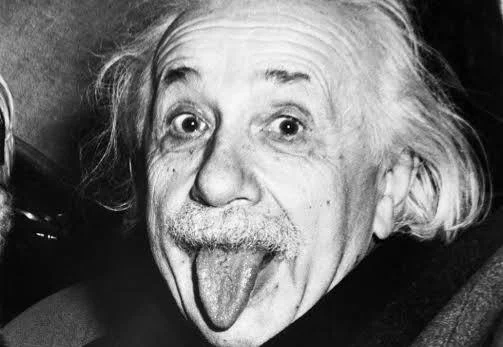

Imagination is more important than knoledge
-Albert Einstein
Albert Einstein was a legendary German-born theoretical physicist who forever altered our understanding of space, time, and gravity. Working as a patent clerk in 1905, he published his "Miracle Year" papers, introducing the theory of special relativity and the world's most famous equation, \(E=mc^2\), which proved that mass and energy are interchangeable. He later expanded this into his general theory of relativity in 1915, re-imagining gravity as the literal bending of space-time around massive cosmic objects. Einstein was awarded the 1921 Nobel Prize in Physics for explaining the photoelectric effect, a cornerstone discovery for quantum mechanics. Fleeing Nazi Germany in 1933, he spent the rest of his life at the Institute for Advanced Study in Princeton, dedicating his final years to humanitarian efforts, civil rights advocacy, and the pursuit of peace.